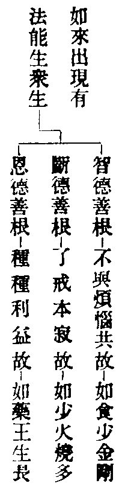

卍新纂大日本續藏經 第08冊
No.239 華嚴經吞海集 (3卷)
【宋 道通述】
第 3 卷
大方廣佛華嚴經吞海集卷下
三十四如來十有相海品。深廣無涯
經中。普賢說。如來化身頂上有三十二大人相。兼餘身分。共有九十七相。每相有五事。一依處。為如來化身頂上有大人相。二名字。光明雲一化成家也。三體性。莊嚴不同。四業用。常放光明。五利益。生善滅惡。
意曰。餘九身上大人相豈可窮也。故經有如海之言。乃相大也。且菩提身上。有大人相。名布施雲。用無貪三業為體。常放大慈光明。令諸眾生生善滅惡。則八萬四千波羅蜜。皆是大人相。若如來國土身。有大人相。名筆雲。用羊兔毛為體。常放黑摩尼光明。令諸眾生書寫善事。復有大人相。名寶鍼雲。用鋼鐵莊嚴。常放利焰光明。令諸眾生補破遮寒。如此則世間所有。皆是如來大人相也。
三十五隨好光明功德品。三重十地
經說三重頓圓十地者。是轉益用大也。佛親說者。難信故。如來為菩薩時。足下有四十種光明。於圓滿王好中放光。照下地獄。有遇斯光者。死生忉利天。聞天鼓音。懺悔已。即時位登十地。先薰一乘種子也。此是正益。化作一萬香雲。供養菩薩。若有眾生身蒙香者。亦得滅除一切煩惱。登於十地。一重轉益也。化作一萬蓋雲。供養菩薩。若有眾生見其蓋者。種一清淨金鋼轉輪王善根。亦登十地。是第二重轉益也。輪王頂上放大光明。若有眾生遇斯光者。亦位登十地。第三轉益也。難處不為難。聞薰種子熟。即得超十地。
三十六普賢行品。因該果海
意曰。瞋心障大慈。慈用無瞋為體。若起一念瞋心。則掃盡菩薩行。一障一切障。所以經云。我不見一法為大過失如此菩薩向彼菩薩起一念瞋心。則有百萬障門。若一念瞋心息。則具一切菩薩行。一斷一切斷。為普賢行。
三十七如來出現品。果徹因源
意曰。出現本有法。一切眾生法身如理出現。報身障盡出現。化身隨機出現。何故不云眾生。言如來出現。答非唯佛也。如體不變。隨緣名來。來即三身十身出現之法。三業化用出現之法。眾生省悟。即新成舊佛。如鎔金成像。是不一義。新佛舊成。是不異義。如破模出像。使應即真而真即應。吾今此身即是常身。法身乃至艸木皆平等也。
一出現因緣。悲智為因。眾生為緣。有十喻明法。多因多緣如大千興造。說法應機如大雲降雨。隨機便見如雲雨無從。教行不則如大千雨滴。生善滅惡如成劫大雨。大悲一味如雨資百艸。先勝後劣如成立世界。無有分別如風輪建立。無礙慧身如山林依地。饒益眾生如水陸空行。二身相出現。應於一切色非色處見於如來。有十喻明法。身徧五無量界如空徧色非色處。身無分別如太虗空。光明照耀如破闇作明。普照一切如日出照山。無不利益如日出分晝夜。四種奇特如靜月輪。無有差別如大梵王。絕於思慮如醫王延壽。作大佛事如摩尼珠。見者生喜如如意寶。
三口現語業。若以用從體。則不壞屈曲。等於法界。若以體從用。則一一音含於法界。若用即是體。妙音常寂。若體即是用。則如長風隨寂。如斯妙音非心識境。故以喻明。聲體無我如劫盡唱聲。隨緣現起如山谷聲。音無斷絕如天鼓開覺。聞者差別如天女音。應時不失如梵王聲。無有邪曲如一味水。普隨心樂如降雨資榮。無有變易如漸成熟。難以情思如龍王降雨。普徧一切如雷電風雨。
四意業出現。如來心意識俱不可得。遮詮顯勝也。但以智無量故。知如來心。表詮顯勝也。故以喻明十智。無依成事如太虗空。不增不減如法界性。用廣體密如四寶性。增益眾生如大海潛流。滅惑成德如珠消海水。依持無礙如空含受。窮劫利樂如大藥王樹。知無不盡如劫壞火燒。留惑潤生如劫風持壞。佛性果智如大經潛塵。妄覆真。小含大。一具多。眾生本有果智即佛果智。何故作眾生。答妄想執著而不證得。智眼未開。復何怪哉。
五境界出現。正明分齊境。兼明所緣境。十法界境界具如來境界。乃至涅槃真如無境界皆是如來境界。所緣之境如降雨無從。分齊之境如大海無窮。
七菩提出現。云何名成正覺。答正揀小乘。成揀菩薩。問以何法為體。答二智二斷為體。問有幾種菩提。答或二或三。萬像皆具十身。
寂照為體如淨日輪。印現萬機如大海水。性相甚深離言論。平等三輪收萬像。因果交徹。一成一切成。有二。一生之本佛與佛之本佛無異故。說一成一切成也。二生佛是染淨相融同真界故。說一成一切成也。體離虧盈如太虗空。相無增減如化現無形。用該動寂。即一現多。同於法界。毛塵包徧。普徧諸心。眾生有佛果智。不斷則生佛非一。不離則生佛非異。則正不異時常不一。若生若佛。求不可得。
八轉法輪出現有五。一八正道為輪自性。二聞思修為輪因。三五蘊為助伴。四四諦作境界。五菩提涅槃為輪果。今經有十。一能轉心證法不生。二所轉體即三輪寂。三得果離斷常。四教不可說。五本來清淨。六觸言皆轉。七即用而寂。八即一而多。九橫豎無礙。十深廣無涯。能令三界所有聲皆是如來說法音。
九涅槃出現有三。一性入清淨涅槃。二真入圓寂涅槃。三示入方便涅槃。皆以摩訶般若解脫法身三法為體。不縱不橫不竝不別。如天之目。如世之伊。有十種相。一體性真常與萬法同。二德用圓備令應即真。三出沒常湛應迹無方。四虧盈不遷法身常然。五示滅妙存處有不有。六隨世生滅長短不定。七有無互現隨機起滅。八大用無涯分布舍利。九體離二邊非實非虗。十結歸無住悲智雙運。
十見聞親近能生眾生三德善根。量云。

後明不信益者。如狂病人罵藥。藥入口中亦得病去。今語遠益。如不輕菩薩。謗尚遠益。況解行在身。此經信與不信俱得成佛。有何難哉。妄情未盡。不契本法。疑念消除。始知從來出現。今令外亡言象內絕思求。則庶幾於出現之旨。今能信者。宿因薰種。若更不信。當來豈聞。然此一品。文法玄奧。能頓能圓。究諸佛本。罄諸法源。根本法輪更處其心。玄中玄也。
八三會普光明殿
三十八離世間品。悲智無礙行
意曰。世即虗偽器及有情。或云分段變易。離有四種。一隨是大悲揀於小乘自利。二離是大智揀於凡夫染著。三菩薩悲無不智。世無不離。智無不悲。離無不世。四如來則境上世離兩亡。心上則悲智雙絕。能全隨而常離。事離則不即世間。性離則即是世間。今事性二利為宗。頓成圓行為趣。普慧併問二百問普賢併答二千答者。表位虗行實也。
九逝多園林會
三十九入法界品。流通無盡經
意曰。法有五。謂有為無為俱存俱泯無障礙。界為性義因義。入亦有五。信入有為法界。解入無為法界。修行入俱存。證入俱泯。圓入無障礙。
經云。不離逝多林如來座前。化現種種身雲。徧往一切村營城邑。以種種言音。說四十二解脫法門。諸大聲聞。身廁祇園。何不見聞廣大佛德。不見潤益甚深德如鬼見膿河。不見高顯廣大德如夢遊天宮。不見幽道難見德如愚對雪山。不見祕藏難知德如隱伏藏。不見迥絕難測德如盲不見寶。不見智照難量德如淨眼明見。不見周徧難思德如比丘入定。不見光顯超世德如妙藥翳形。不見微妙難懷德如二天隨人。不見廣大境界德如滅定不行。
意曰。聲聞劣而不見聞。菩薩勝而能頓證。力用交徹。勝劣互收。成大緣起。方是深玄無差之差。則有三乘五性。差即無差。平等成佛。
末會有三。一文殊從善住樓出。一切部類俱隨智轉。舍利弗等六千比丘隨逐。文殊如象王迴觀。諸比丘歎文殊德。六千道成言下。心無疲厭。成就佛法。得無礙眼。入大法海。於文殊足下成道。
二經歷人間至福城東。說普照法界經。一萬諸龍。發菩提心。三乘人會權歸實。
三善財會。文殊為說諸法空。善財開發本有菩提心。寂然常住。依此參善知識。令普賢行速得圓滿。有十種心。發足南行順智光明。
一德雲比丘住勝樂國。解行發心。踏著妙峯山頂。證佛二身行也。諸佛隨念而現解也。
二海雲比丘住海門國。淨治心地。觀於業海心海法海十二支。普眼法離見聞覺知。
三善住比丘在楞伽道。修行住。於法性空中往來經行。諸天作禮恭敬圍遶。
四彌伽居士住達里國。從聖教生。說輪字法。妙音無礙。明利鈍根。說二乘法。
五解脫長者住聚落中。以方便力八相成道。現一切剎。自心如水。諸佛如影。一念具足。
六海幢比丘住閻浮提。正心入定。離出入息。從身出生十四類。彼此如夢。在法性中現。
七休捨優婆夷住海潮處。不退大心。眾寶莊嚴。離憂安隱。演不可說方便門。
八毗目瞿沙仙人住那羅國。童真三業。執善財手。見十佛剎。放善財手。還住自位不動。
九勝熱婆羅門住伊沙那。為法王子。逆行如火聚。刀山似萬行。善財投身下。得善住三昧。
十慈行童女住師子城。法水灌頂。莊嚴宮殿。皆見法界。諸佛令我各異門入。
一善見比丘往三眼國。具三種施。常生歡喜。圓光一尋。一念之中悉見諸佛。
二自在童子在河渚中。廣行饒益。持三聚戒。修學算數。悟入神通。智慧光明。
三具足優婆夷在海住城。心無違逆。身無纓絡。唯一小器。隨眾生欲飲食充滿。八萬眷屬。
四明智居士住大興城。心無屈撓。仰視虗空。隨意出生。無量眾生悉皆如意。仰視真精進。
五寶髻長者住師子城。心無癡亂。將善財入禪定宅。有十層八門。燒一元香。永離貧窮。
六普眼長者住藤根國。善現正位方便出生。合和一切香。唯用智波羅蜜。普見一切佛。
七無厭足王住多羅城。身行無著。見瞋害行逆行方便。一切眾生皆如幻化。不惱一蚊一蟻。
八大光王住妙光城。以難得行建大慈幢。山川艸木。悉迴向曲躬於王。願力成就。
九不動優婆夷在安住國。用善法行。供養脩臂佛。不生念欲之心。求法無厭。
十徧行外道住都薩羅。行真實行。化諸異見。示同其形。說一切處菩薩行門。
一鬻香長者住廣大國。救護眾生。離眾生相。別知一切香出處功能。有其十種。
二婆施羅船師。不壞善根。將諸商人入佛法海。行安隱道。珍寶充足。還閻浮提。
三無上勝在可樂城。等一切佛。理斷事務。令捨非法順行善法忍辱柔和。
四師子頻呻比丘尼在迦陵林。以大精進。至一一處。徧坐寶樹。眾會不同。所說各異。
五婆須蜜女住險難國。無盡功德。在市鄽北。離貪欲際。眾生見我。隨樂皆現。
六鞞瑟胝羅居士在善度城。善根堅固。開栴檀佛塔。見三世諸佛。不曾入般涅槃。
七觀自在菩薩。隨順眾生大悲行門。常在一切如來所。普現一切眾生前。
八正趣菩薩。從法性空中來。同如之行。有一百種。一念不移。普至十方。供佛聞法。
九大天神在墮羅城。以無著無縛力。舒四無礙手。取四大海法水。自洗其心。能淨他心。
十安住地神住摩竭國。用等法界善根足。按轉心地。諸寶涌出。不可破壞。自在如意。
一婆珊婆演底夜神在迦毗城。生大歡喜。三心齊具。見佛說法。成熟眾生如大雲網。
三喜目觀察眾生夜神。發光明身。現相似身雲。於眾生前。聞思修慧說一切法。
四普救眾生夜神。如焰慧破四大空息三惡。為妙德女。修補故壞佛像。生在王家。
五去此不遠。有寂靜音海夜神。性相互乖。於此得勝觀佛毛孔。作用無邊。修十大法藏。
六守護一切眾生夜神。般若現前。得大總持。說緣生法。為法輪光比丘尼。護持佛法。
七開敷一切樹華夜神。遠行大行。佛昔因地盡皆明見。為寶光明女。信知他人功德。
八大願精進力夜神。普現色身。為善伏太子。救獄罪人。遇燈王佛。說圓滿經。
九妙德夜神。善慧說法。十種受生藏。我皆親近十釋女瞿波。能受雲雨法。曾為妙德女。探蘭修微行。願見威德主。今日已圓滿。諦觀無厭足。如意得自在。
一摩耶夫人。住此世界中。一切眾生前。常現大願身。三世諸佛。以願智為母。我身不餘本量。等於虗空。曾為道場神。又為蓮池神及菩提樹神。皆號我為母。
二天王光。有淨莊嚴。造立伽藍。得清淨念。
三童子師徧友。都無言說。即得實無所得法。
意曰。從文殊至天王光。皆帶義理。唱但是聲。故為義母。表住四十二。其實無窮。且如唱喝字時。入般若門。名金剛王劒。唱咄字時。入般若門。名師子踞地。
一慈氏菩薩。會緣入實相。住大莊嚴樓閣前。歎善財發菩提心。彈指出聲。樓閣門開。善財得入三世不忘念。
二文殊菩薩。住普門城。智照無二相。昔受文殊教。歷於一百一十城。即伸右手。摩善財頂。若離信自心。則一切善法不得成就。信與智無二也。三普賢菩薩。在如來前。於一一毛孔中。現無邊光明雲。善財見已生大歡喜。彼一切微塵中普賢。即伸右手。摩善財頂言。我法海中一文一句。未有不是捨轉輪王身位而求得者。善財住自位。普賢摩頂已。證與諸佛等。
意曰。善財冥心得見三千大千微塵數善知識者。五根五塵皆善知識。略示一二。以例諸法。
一燈燭善知識。在如來座前。告善財言。我得解脫。名普照燈。於日沒夜暗時。作大佛事。若人見我。生歡喜心。若天見我。生快樂心。龍神見我。生敬仰心。聲聞見我。生寂靜心。菩薩見我。生慈悲心。如諸菩薩其心如地。我豈能知。
二卓子善知識。在如來前。告善財言。我得解脫。名普皆平等。於三世諸佛一切眾生。其心平等無有高下。猶如大地不生分別。如諸菩薩普覆三界。我豈能知。
三法堂善知識。在如來會上。告善財言。我得解脫。名普蔭一切。若諸眾生得見我者。生廣大想。生清涼想。生奇特想。生聽法想。一切凡聖常來此中。天龍圍遶。聞法歡喜。作禮而退。
大方廣佛華嚴經吞海集卷下